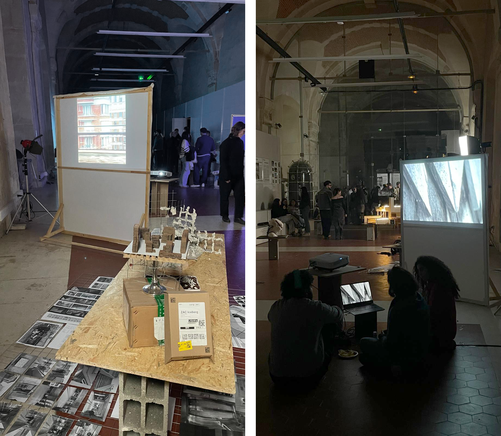
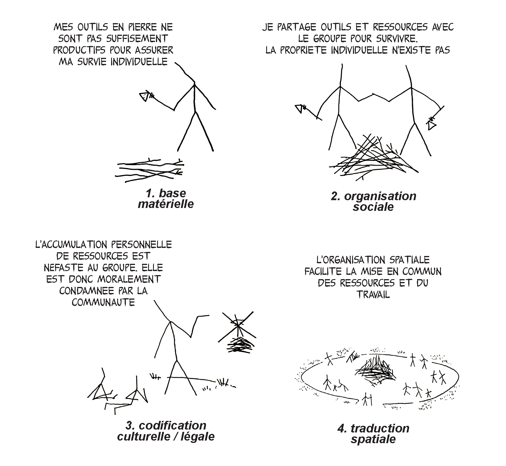
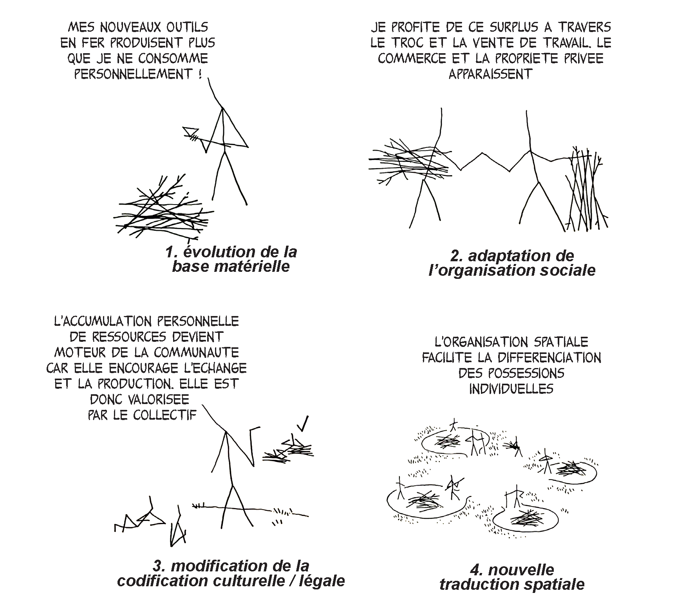
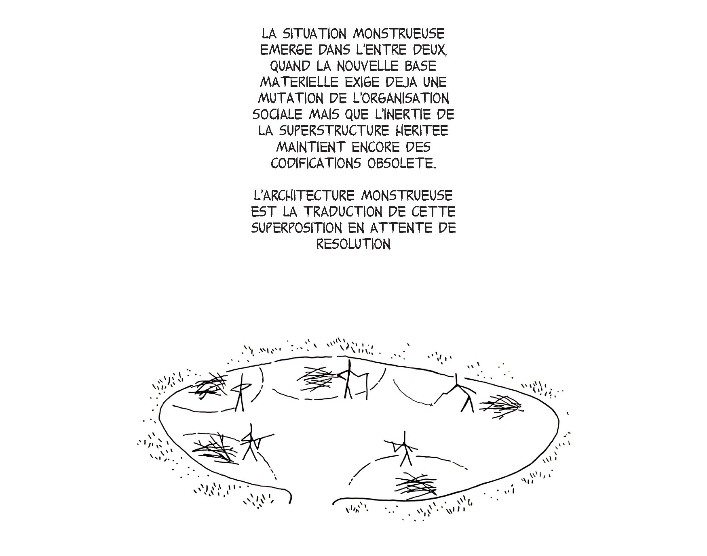

institution : ensa versailles
date : white week janvier 2026
"ce que les monstres ont a nous dire"
direction : Henri Bony & Léa Mosconi
équipe : avec Margaux Darrieus
type : enseignement & recherche
La discipline architecturale semble s’être récemment prise de passion pour la figure du monstre2, “l’anormal”3 qui par sa différence corporelle et comportementale révèle les limites et les contraintes imposées par la norme. On peut relier cette digestion tardive des idées foucaldiennes à l’influence des thèses queer, féministes et décoloniales qui parviennent enfin à remettre en question la normativité héritée de la modernité. Mais on peut aussi y voir l’abandon progressif de la notion de crise, centrale dans le discours architectural post 20084, qui en s’allongeant en longueur et sans fin annoncée, prend plutôt les couleurs du “clair-obscur” gramscien, propice à la naissance des monstres. La révolution verte qui n’a pas lieu, la pandémie qui ne cause pas de basculement profond ou la menace fasciste qui ne génère aucun soubresaut républicain ont terni l’idéal du grand soir, de la réforme immédiate. L’époque est à la superposition des nappes de réalité, hantées les unes par les autres car contemporaines, mais non-miscibles puisque évoluant dans des réalités parallèles.
La célèbre citation de Gramsci nous semble un point de départ intéressant pour aborder la question du monstre par un angle temporel. Dans la matrice matérialiste marxiste, la marche de l’histoire se fait par la dialectique entre base (les conditions matérielles de production) et superstructure (leur codification culturelle et socio-légale). Les évolutions du monde pour un matérialiste ne peuvent s’expliquer qu’à partir de la matière, c’est-à-dire des conditions de production : on découvre un nouveau continent, une nouvelle source d’énergie, de nouvelles limites planétaires, et alors toute la machine productive (et reproductive) s’adapte en fonction. Dans le même temps, afin de justifier un certain ordre du monde qui crée nécessairement des perdants et des gagnants (les colons et les colonisés, les prolétaires et les propriétaires, etc.), les classes dominantes construisent une superstructure culturelle qui naturalise les rapports entre les individus par la loi mais aussi par la tradition, la morale, la religion, voire même « le pragmatisme ». La base s’en voit alors façonnée et souvent maintenue dans un état des choses qui favorise les dominants - cela jusque dans la métabolisation de la crise écologique elle-même, discours critique transformé par ces derniers en nouvelle opportunité de marché5.
Or la base et la superstructure ont toutes les deux une certaine inertie et la mise à jour de l’une ne peut immédiatement se répercuter sur l’autre. La crise décrite par Gramsci a lieu dans les moments de « clair-obscur », quand une nouvelle base matérielle tente de s’imposer mais que l’ancienne superstructure continue de lutter pour justifier l’ancien ordre du monde – à vide. Dans ces entre-deux apparaissent les monstres, c’est-à-dire les phénomènes rendus possibles par les nouvelles conditions de production, mais qui restent codifiés dans des grilles culturelles héritées du système précédent. Les monstres sont donc à la fois des entités et des temporalités, des objets qui se débattent dans des systèmes qu’ils réfutent ou qu’ils inquiètent. Les monstres sont en somme des situations qui, si on apprend à les regarder attentivement, peuvent devenir des disjonctions désirables. L’opportunité d’un renversement d’une superstructure se situe en effet peut-être dans cette discordance des temps, potentiel territoire d’une lutte pour de nouveaux équilibres.
L’exclamation de Hamlet qui vient d’échanger avec le fantôme de son père devient le fer de lance de Jacques Derrida dans son ouvrage Spectres de Marx (Éditions Galilée, 1993). Le spectre derridien c’est justement le monstre dans le plus pur sens marxiste : l’idée qui n’est pas en phase avec le monde – car arrivée trop tôt ou trop tard. Le fantôme c’est le monstre : rendu impossible par la nouvelle organisation de la matière (le corps décédé) mais maintenu artificiellement en présence par l’obstination de l’esprit.
Le monstre est l’être désarticulé, le zombie tiraillé entre deux mondes et donc renié par les deux. La sorcière, la femme guérisseuse est pointée du doigt entre le Moyen Age tardif et la Renaissance (montrée, rendue donc monstre) lorsque la réorganisation de la société confisque la santé aux individus pour en faire le monopole de l’institution. La base matérielle qui l’a faite naître est balayée par une nouvelle superstructure. De manière inverse la figure du vampire, mute au tournant de l’ère de la modernité et de l’émancipation démocratique. De simple revenant, il devient sous la plume des auteurs gothiques un aristocrate qui se nourrit de la force vitale des serfs. Le vampire n’a alors plus de corps, plus de matière, c’est un esprit nuisible qui doit aspirer l’âme des hommes pour se maintenir en vie. Le monstre apparaît quand base et superstructure entrent en contradiction, quand l'une change de limite, d'échelle ou d'incarnation et percute ou hante l'autre.
À l’heure des crises environnementales, le monstre peut être un opérateur pour faire atterrir dans la superstructure l’Anthropocène et son changement climatique. Pour appréhender les effets de cette nouvelle ère depuis la base matérielle et à l’échelle de ses pouvoirs d’agir, l’anthropologue Anna Sting propose de suivre à la trace l’animal ou le végétal féral qui, autrefois domestiqué, se propage hors du contrôle des humain·e·s en s’entremêlant aux infrastructures qui l'ont fait naître. L’être féral, c’est l’effet non planifié des structures, celui qui leur échappe tout en ayant besoin d’elles pour proliférer. C’est un être inquiétant, un monstre porteur d’un potentiel de déraillement, de renversement. Si l’animal est un sujet prompt à la féralité (puisque même dans son stade domestique, il reste une part capturée de la nature), l’architecture peut contenir un potentiel de féralité que l’ère des fermetures8 nous permet d’appréhender. Les vraies-fausses grottes en ciment rocaille des jardins du château de Versailles et leurs groupes sculptés, protégés comme des humain·e·s par des sacs de sable pendant la seconde guerre mondiale, ou les terrils des anciennes mines devenus refuges de biodiversité et parc d’agrément, ne sont-ils pas des situations monstrueuses, des manières d’habiter en clair-obscur, entre plusieurs mondes, aux limites des catégories, humain·e·s / non-humain·e·s, naturel / culturel, désirables / inquiétantes ?
Ailleurs, les ruines de la modernité industrielle transformées en parc d’attractions ou les chantiers abandonnés par le capital fossile consacrés en incompiuto9 par nos imaginaires d’architectes, contredisent la capacité des architectures férales à renverser vraiment l’ordre superstructurel. Pour autant, la description attentive de situations architecturales monstrueuses peut permettre d’échapper à la perception d’une base matérielle le subissant. Observer avec attention, puis décrire avec grande précision, une situation monstrueuse permet de saisir les superstructures invisibles, réseaux extractivistes et économies mondialisées, qui la sous-tendent. Explorer les lieux et les moments où le monstre émerge du seuil auquel il était assigné, ce processus étrange où flanche la réalité lissée des formes construites du capitalisme tardif et de l’idéologie de la ville néolibérale, est un moyen de révéler ses transgressions possibles. Cela permet de comprendre par quelle forme et à quelle échelle, la base peut s’échapper, et comment l’architecte peut l’accompagner.
Dans leur dernier livre en commun, le couple Venturi-Scott Brown développent l’idée du maniérisme non pas comme un style historique mais comme une stratégie de réponse à des moments de clair-obscur du système architectural. Quand la base matérielle (les injonctions techniques) ne correspond plus à la superstructure (les injonctions culturelles) ; quand la complexité accrue du monde de la construction amène à des contradictions internes (entre les différents acteurs, entre les logiques économiques, etc.), alors l’architecture maniériste est tiraillée entre plusieurs mondes. Elle est disjointe, et sa forme en devient monstrueuse.
Ce que les monstres ont à nous apprendre, c’est que des situations asynchrones, des moments de crises créent des situations monstrueuses. Le maniérisme peut être envisagé comme la réponse architecturale à ces contradictions. En se risquant nous aussi à l’anachronie pour suivre la proposition des Venturi-Scott Brown, nous pourrions dire ainsi que la double colonnade du Louvre (1670), l’immeuble de la rue Franklin (1904), le centre Pompidou (1977) ou encore Euralille (1994) sont des monstres qui proviennent d’un monde et tentent d’en habiter un autre. Alors être un·e architecte maniériste, serait être un·e monstre conscient qui décrit et participe à cultiver le monstrueux et même à le rendre désirable.
Alors s’il est bien décrit et même, bien mis en œuvre, le monstre peut se faire accélérateur de la disjonction d’un monde. Pour Mark Fisher, critique culturel marxiste, le fait d’insérer des défaillances, des bruits dans la musique (ici précisément dans les morceaux noise de Mark Stewart), de remettre le crac du vinyle dans une composition numérique, des effets de VHS dans les clips tournés au caméscope, sont des moyens monstrueux de rappeler les anachronies et les dissonances du réel sous le capitalisme tardif. Notre temporalité n’est pas lisse, elle est buggée, inégale. Le glitch est la rocaille contemporaine, l’excès de maniérisme qui révèle la sur-complexité de l’époque. On peut trouver la même ironie asynchrone dans le néo-classicisme préfabriqué des espaces d’Abraxas de Riccardo Bofill (1983) et l’apocalypse commerciale annoncée par les supermarchés Best imaginés par James Wines (1975-84).
Mais la disjonction peut aussi échapper à la planification des constructeurs. Le bug architectural, qu'il soit planifié au sein de la matière construite ou à l'inverse subi dans l'existence d'un édifice, peut accélérer les incursions monstrueuses transformatrices du réel. Là est donc le double rôle du monstre architectural, voire de l'architecture dans une époque monstrueuse : révéler les contradictions internes de son système, les incarner moins pour les résoudre que pour les faire fructifier, car c’est peut-être dans le monstre que se niche des renversements profonds entre la base et la superstructure. Comme l’écrivait Henri Lefebvre, « Ce qui advient en architecture a toujours une portée symptomatique d’abord, et causale ensuite. »12

1. A. Gramsci, Les Cahiers de Prison, Cahiers 3, Paris, Gallimard, 1983 [1948] ↩
2. Ainsi en 2020, Henri Bony, Léa Mosconi et Antoine Vercoutère invitent à « Penser le monstre moderne » lors d’un entretien avec Bruno Latour (Les Cahiers de la recherche architecturale urbaine et paysagère [En ligne], Matériaux de la recherche), en 2024 c’est Jean-Louis Violeau qui publie Baudrillard et le monstre (l’architecture), aux éditions Parenthèses, et la même année Emmanuelle Raoul-Duval et Jacques Marie Ligot organisent le cycle de conférences Monstrum à l’école nationale supérieure d’architecture de Paris-Est. ↩
3. Michel Foucault, “Les Anormaux”, cours au Collège de France, janvier-mars 1975 ↩
4. Voir par exemple Jean-Louis Violeau, L’utopie et la ville : après la crise, épisodiquement, Sens & Tonka, 2013 ↩
5. Hélène Tordjman, La croissance verte contre la nature, Critique de l'écologie marchande, Paris, La Découverte, 2022↩
6. William Shakespeare, Hamlet, 1601, Acte I, Scene 5 ↩
7. Anna Lowenhaupt Tsing, Le champignon de la fin du monde. Sur la possibilité de vivre dans les ruines du capitalisme, Paris, La Découverte, 2022 [2015], p.55 ↩
8. Emmanuel Bonnet, Diego Landivar, Alexandre Monnon, Héritage et fermetures : une écologie du démantèlement, Paris, Editions divergences, 2021 ↩
9. Alterazioni Video & Fosbury Architecture (coordination), Incompiuto, la nascita di uno stile, Humboldt Books, 2018 ↩
10. Denise Scott Brown & Robert Venturi, Architecture as Sign and System, for a Mannerist Time, Harvard University Press, Cambridge, 2004 ↩
11. Mark Fisher, "noise as anti-capital: as the veneer of democracy starts to fade", K punk,, Audimat 2025, [2004] ↩
12. Henri Lefebvre, Critique de la vie quotidienne, Tome 3 De la modernité au modernisme (Pour une métaphilosophie du quotidien), L’Arche, 1981 ↩


